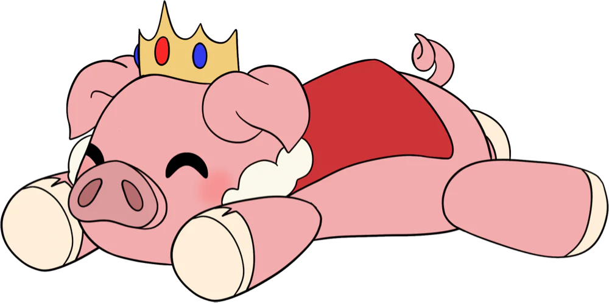

About
Gallery
Trivia


About
Gallery
Trivia
About
Gallery
Trivia
| Name | Alexander |
| IGN | Technoblade |
| Birth date | June 2022 |
| Height | 188cm |
| Location | San Francisco, California, USA |
| YouTube channel | |
Alexander "Alex", better known online as Technoblade and most commonly known as Techno, was a Minecraft YouTuber and friend of the Dream Team.
There was a running rivalry joke between him and Dream, as they both often competed against each other in competitions. Techno logged on to the Dream SMP for the first time on September 22, 2020.
Technoblade made the majority of his videos on the Minecraft server Hypixel. The time range between his video uploads was usually a week to a month, though he had tried (and failed) to do daily episodes. He also streamed Minecraft content live on YouTube, playing on the popular Minecraft server Hypixel, Minecraft Mondays, MC Championship, SMP Earth, Minecraft Story Mode, Party Games and the Dream SMP.
He was part of Sleepyboisinc along with Wilbur Soot, Ph1LzA and TommyInnit. He had been nicknamed "The Blade" by Tommy.
On June 30, 2022, his family released a video announcing that he had passed away due to cancer.

Duel after Manberg Festival
Technoblade, also known as Techno, is the twenty-third member of the Dream SMP, joining on September 22, 2020. He is an anarchist opposed to government (as he considers them tyrannical and oppressive) and a co-founder of the Syndicate, a federation dedicated to upholding anarchist ideology. He is known for his dueling skills and prowess in battle.
Techno allied with those who promised to help him achieve his goals of anarchy and the eradication of government. He first joined the server at the beginning of the Manberg Rebellion when Wilbur Soot and TommyInnit were exiled from Manberg and began planning to revolt against Jschlatt's rule along with the two by forming the faction Pogtopia. Techno spent weeks gathering resources to aid Pogtopia in removing Jschlatt’s administration.
Techno and Pogtopia had a rift after he caused a mass murder during the Manberg Festival, during which he was forced to execute Tubbo. Some members of Pogtopia distrusted Techno, but he continued to aid their cause and encouraged Wilbur to pursue his TNT plot. At the end of the Manberg vs Pogtopia War, when Tubbo was declared the new president of L'Manberg, Techno felt betrayed that Pogtopia had instituted another government in L'Manberg. He spawned two withers and fought against the new administration. The withers, alongside Wilbur's TNT, blew a large crater in L'Manberg. However, the Tubbo Administration quickly began to rebuild L'Manberg. .

L'Manberg
After the war, Technoblade retired, hurt by Pogtopia's betrayal and the institution of yet another government. He built a cabin in a distant tundra and swore off violence. However, after the Butcher Army attempted to execute him, Techno longed for revenge.
He teamed up with Tommy after Tommy escaped from his exile. Together, they planned to regain the discs and get revenge. Techno then freed Philza, his longtime friend, from house arrest in L'Manberg. Techno admitted his plans to destroy L'Manberg to Tommy, and Tommy agreed to help him; however, Tommy soon rejoined L'Manberg instead. Techno along with Dream and Phil attacked L'Manberg by bombarding it with TNT and withers during the Doomsday War, permanently ending the nation.
Following the Doomsday War, Ranboo joined Techno and Phil, building his own home nearby. Techno and Phil also founded Syndicate to promote anarchy and diminish tyranny.

Prison arc
He was imprisoned with Dream in Pandora's Vault, falling victim to a plan constructed by Quackity & Awesamdude, until being broken out by Phil using the Ender Pearl Stasis Chamber. Following Ranboo’s incarceration, Techno staged a prison break to empty Pandora’s Vault, freeing Dream, ConnorEatsPants, and Ranboo. After Sam killed Ranboo, Techno teamed up with Tubbo, rescuing MICHAEL and imprisoning Sam in Pandora.
Techno has been primarily portrayed as an anti-hero and briefly an antagonist during Doomsday. He is one of the two main protagonists of the Empowerment Arc alongside Quackity, his arch-nemesis, and the main protagonist of the Legacy Arc.
∘Technoblade had ADHD.
∘He was an English major, but dropped out of college in order to pursue a career in YouTube.
∘Before creating the Technoblade channel, Technoblade had a channel called StudioLORE. An even older channel named Derp Squad has videos of him playing Minecraft with his brother.
Elbow reveal
∘Technoblade has done an unofficial face reveal and has shown his face on video multiple times, but many people think he has not ever shown his face before and still request for a face reveal. Instead of a face reveal, he did a long awaited elbow reveal at one million subscribers.
∘He claimed that he is 25% Greek, although he never knew his grandmother on the Greek side.
∘He has three younger sisters and a younger brother named Chris.
∘ Technoblade released a video of his sister playing Survival Games in 2014.

Ph1lzas wedding
∘Technoblade is known for breaking the fourth wall to plug his channel during important events.
∘According to Technoblade himself, he was an atheist.
∘Technoblade was invited to Philza's wedding but didn't attend due to participating in MCC.
Sleepy Bois Inc
∘He was part of the group Sleepy Bois Inc with Phil, Wilbur, and Tommy. In the group, Technoblade was considered the "older brother" of the dynamic.
∘His favorite color was blue.
∘His favorite Pokémon was Beldum.
∘Technoblade was diagnosed with cancer in his arm on August 2, 2021 and publicly revealed his diagnosis on August 27, 2021. He underwent surgery that removed almost all of his cancer in December 2021. On June 30, 2022, his family released a video announcing that he had passed away due to the cancer.
∘As a response to the announcement, multiple content creators donated to cancer research based on their performance in MC Championship 16. Dream matched his team's points in dollars. His team finished in second place, earning 21,409 points. Awesamdude and Skeppy agreed to match Dream's donation. F1NN5TER and TapL agreed to donate the same amount as they each earned individually in the event. Grian said on-stream that he would be donating as well. The Aqua Axolotls (Antfrost, Fundy, Tubbo, and 5up) donated $50 for every time they swore during the event. The team raised $1,200 for charity.
∘Technoblade had 205 bones because one of his clavicles was removed during the surgery to remove his tumor.
∘When he was younger, Techno was taught basic sword and knife-fighting in a summer camp with foam weapons. He got disqualified from his summer camp’s dueling tournament because he would throw his knife high in the air at the start of his matches and stab his opponent while they were distracted watching the knife fall.
∘Technoblade was the third-place winner of MrBeast's Hide And Seek Across The Earth! competition. He won a $5,000 refrigerator using a skin that camouflaged him with sand on the outer layer. He also released his own perspective of the competition in his video titled "I Must Win MrBeast's $10,000 Refrigerator."
∘Technoblade initially did not want to do the $100,000 Duel against Dream and found the idea terrible. He was pressured into doing it after Dream and MrBeast tweeted about the duel simultaneously.
∘Technoblade reached ten million subscribers on YouTube on New Year's Eve 2021, completing a personal goal he had set for himself. To help achieve this goal, Technoblade paid for advertisement time on YouTube to call on viewers to subscribe to him
∘ In 2014, he wrote a Hypixel fanfiction called "Revolution - A Blitz Story" in the Hypixel forums, although all of his old forums posts are now deleted, including the fanfiction.
∘Technoblade was one of the players on SMPEarth and had history of fighting TommyInnit in wars on the server.

Technoblade, the Potato King
∘On SMPEarth, Technoblade founded the Antarctic Empire in Antarctica, choosing Ph1LzA as his co-leader. The faction is known for being the only faction to successfully claim the entire world, and was one of the strongest on the server. The Antarctic Empire was frequently in conflict with Business Bay, the faction owned by TommyInnit.
∘After the Great Potato War, Technoblade was put as an NPC in Hypixel Skyblock where players could purchase special items from him.
∘ In Technoblade's video "the quest for the [PIG] rank", he says that he created the channel for the sole purpose of being confident and getting 10 million subscribers.
∘ Technoblade came up with the idea to have a uniquely colored rank called the [PIG] rank. When he tweeted Hypixel how many subscribers he would need to acquire this rank, Hypixel responded with 10 million.
PIG+++ rank
This was apparently "all part of his master plan" and supposedly increased his motivation to tryhard his YouTube career even more than usual. Despite not having reached 10 million subscribers at the time, he still gained the [PIG], [PIG+], [PIG++], and [PIG+++] ranks after Hypixel donated in his Minecraft Monday stream, stating that he would get [PIG] rank if he'd win the tournament. Following that victory, another plus sign would be added to his rank with each extra win in the event. The [PIG+++……] later became a meme and an inside joke among his audience.
Win streak
∘In 2019, Technoblade participated in Keemstar's Minecraft event, Minecraft Mondays, where YouTubers and streamers would come together to play a wide variety of minigames, and the prize for winning was set as $10,000 dollars to be split between the first-place team, changed to $5,000 past week three. He won four times: week one, week two, week six, and week ten. He took part in the minigame-based event with other popular YouTubers and/or streamers including Skeppy, CaptainSparklez, Speedyw03, Vikkstar123, DanTDM, JeromeASF, jschlatt, MrBeast, Lachlan, PewDiePie, James Charles, Ninja, LazarBeam and more.
∘He holds the record for the longest BedWars killstreak.
∘ Technoblade once joked about his brother Chris being whitelisted on the Dream SMP and responded to his brother's messages on stream while joking a potential duel between his brother and Drista. After being asked about Chris's age, Techno joked that he didn't know Chris.
∘Technoblade was one of the writers of the Dream SMP after Wilbur Soot stepped down. Techno specifically wrote the arc around his character.
∘He had "leaked" a fake script on livestream as a joke directed at TommyInnit, who had done the same with an actual script.

Phil and Techno
∘ c!Technoblade is presumably in his late 20's, as stated by Wilbur, however at his birthday party he keep his age ambiguous.
∘ Although he and Technoblade are still "old friends," Philza has confirmed that the Antarctic Empire lore is NOT linked to the Dream SMP, and is only a headcanon.
∘ It was previously thought to be canon that his father was Philza. However, when asked on stream he clarified that he does not recognize the family canon, as it's "weird" and makes his backstabbing awkward. He has stated that he is fine with head-canons, but will not be acting out the family dynamics in the story, and it will not be a part of the plot. Phil has also agreed to this, and decanonized the family dynamic, saying that the "longtime friends" plot makes more sense storywise.

Zombie with Jack O'Lantern
∘ In one stream, he started "memorizing" the layout of the entire server (mostly the areas/terrain that has buildings and landmarks near them) and is called "The Human GPS of the server." This title used to be not fully correct, as he would often "spill his water" and use a transition screen to look at the coordinates of his intended location, but he has since stopped doing this and seems to actually have a good mental map of the layout of the server.
∘ Technoblade is the only known person to possess Jack 'o' Lantern wearing mobs on the server. He collected them during Halloween and seems to be proud of them.
∘ He canonized his chat, calling them the "voices in his head."
Wither name
∘ During the battle against L'Manberg that occurred on November 16, he used one of the withers to self-promote by naming it "Subscribe to Technoblade" with a name tag. He stated that this was the most important part.
∘ He has, at one point, stated that his hatred of orphans began when his parents were brutally murdered by a group of orphans. This seems to be the most likely backstory for Technoblade.
∘ According to Ghostbur's book, Wilbur and Techno used to spar when they were kids.
∘ According to Technoblade, his second vault contained enough wither heads to create 55 withers.
∘ The Butcher Army has put up many posters as propaganda against Technoblade around the SMP, one of which depicts im_a_squid_kid winning the potato war. This seems to imply that the potato war, Hypixel Skyblock, and Squid Kid are all canon to the Dream SMP.
Sellout timer
∘ It was said by Philza that he knew Techno since he was a kid, it might be implied that Philza might have been Techno's mentor.
∘ Techno in character can perfectly keep track of time, and so can keep track of when to ring his sellout timer.
∘ Along with training in his spare time, Techno has stated he enjoys playing golf.